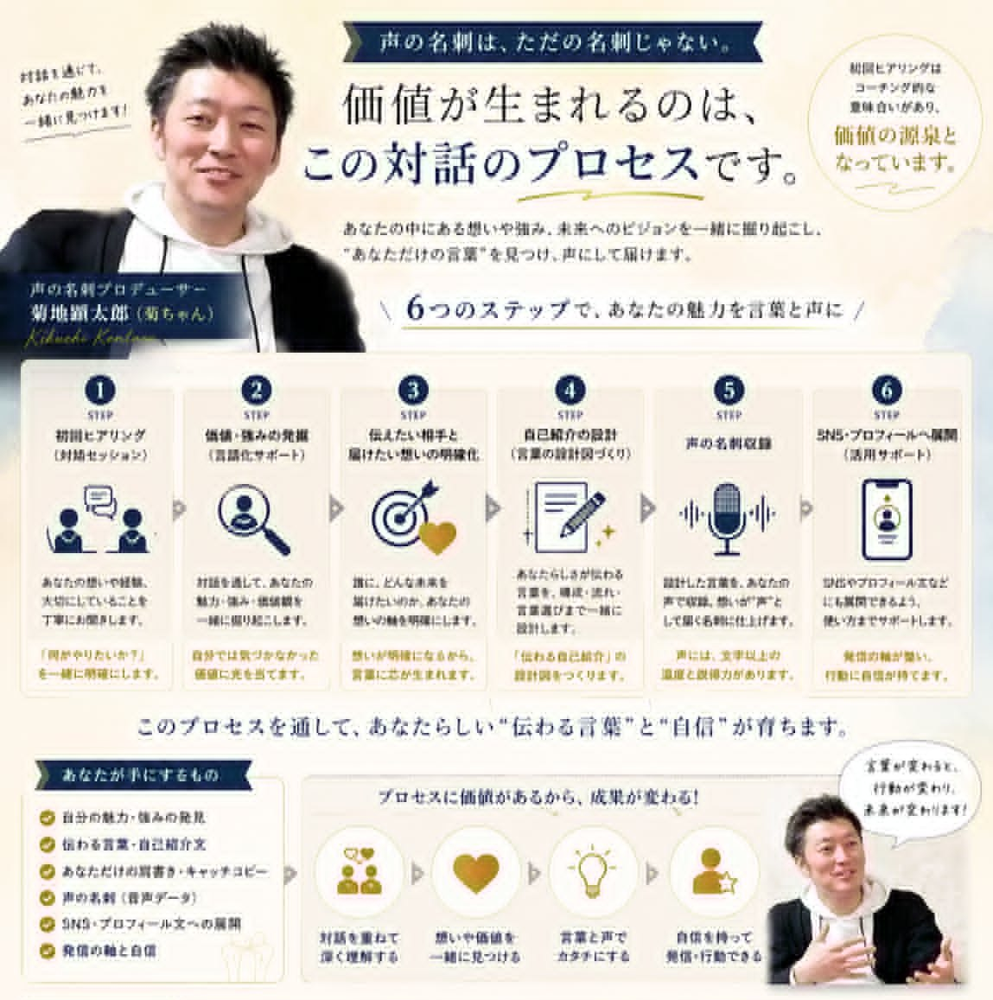

KOE NO MEISHI — 声の名刺
QRコードひとつで「わたし、こういう人です」と手渡せる——
ハルヤがあなたの話をじっくり聴いて仕立てる、2枚目の名刺です。
ABOUT
名刺交換のあと、相手の顔を思い出せなかったこと、ありませんか。肩書きと連絡先は伝わったのに、「どんな人か」だけが伝わっていない。もったいないのは、いつもそこです。
声の名刺は、カードにのせた小さなQRコード・NFCから、あなたの音声プロフィールが流れる名刺です。台本を渡して読んでもらうのではありません。ラジオと同じように、ぼくがあなたにインタビューして、あなた自身も忘れていたような物語を引き出して、一本の音声に仕立てます。
文字のプロフィールが「履歴書」だとしたら、声の名刺は「はじめまして」の握手のようなもの。声には、書き言葉に乗らない体温が宿ります。

FOR YOU
ひとつでも心当たりがあったなら——それはあなたの物語が、まだ声になっていないだけかもしれません。
FLOW
「ちょっと気になって」だけで大丈夫。まずは公式LINEから声をかけてください。
どんなものか、どう使えそうか、費用のことも——気になることをぜんぶ、ここでお話しします。聞いてから決めてもらえれば十分です。
収録の前に、あなたの歩んできた道のりをゆっくり伺います。ここで見つかった「その人らしさ」が、名刺の芯になります。
Zoom・stand.FM・対面（札幌近郊）から、やりやすい形を選べます。ラジオのスタジオでの収録も、ご相談に乗れます。
音声を整えて、QR・NFC付きのカードに仕立ててお届けします。かざせば、あなたの声のプロフィールが流れます。
渡して終わり、にはしません。どんな場面でどう手渡すと活きるか、一緒に考えます。
PRICE
金額は、このページには書いていません。
声の名刺は、渡す相手やお仕事によって、いちばん活きる形が一人ひとり違うからです。1対1でお話しするときに、あなたの使い方に合わせて丁寧にご案内します。聞いてから「今回はやめておく」でも、もちろん大丈夫。押したり、焦らせたりは、しません。それはぼくの番組でもこの名刺でも、いちばん大事にしていることなので。